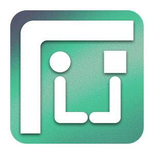

Irfan (KOJEEE)
Halo Saya Irfan atau dikenal sebagai Koje. Saya merupakan desainer grafis
Donasi Via SaweriaEmail
📁Others📁
Read Our Blog
© 2024 - KOJE, All Rights Reserved.
Halo Saya Irfan atau dikenal sebagai Koje. Saya merupakan desainer grafis
Donasi Via Saweria© 2024 - KOJE, All Rights Reserved.